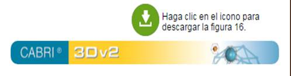

Friedrich Riesner. Frontispicio de Opticae Thesaurus de Ibn al-Haytham, 1572. Basilea: Eusebius Episcopius
En esta fase se estudia la recepción y el impacto en el mundo árabe de los trabajos geométricos de Euclides y Ptolomeo, por un lado, y de los estudios anatómicos de Galeno, por el otro. Esta recepción lleva a Alhacén a estudiar las diferentes esferas que constituyen el ojo y a prestar atención a la refracción de la luz a través de dichas esferas. El estudio detallado del ojo condujo a concebir las vecindades del vértice de la pirámide visual como estructuras complejas articuladas al instrumento. Alhacén ofrece interesantes argumentos para postular el protagonismo de la cara posterior del cristalino en la recepción de simulacros.
Figura 2. Puntillismo de Alhacén
Instrucciones: El punto B se puede desplazar a lo largo de una línea horizontal imaginaria y con ello cambiar la posición del objeto. Si se quiere ampliar el tamaño del objeto, desoculte la semirrecta DA (o EC) y proceda a rotarla para ampliar o redicir las dimensiones del segmento AC. El tamaño del círculo ocular también se puede ampliar o reducir. Para visualizar el cono radiante originado en cualquier punto del objeto AC, active el botón “Todos los puntos en el segmento”. El punto O se puede mover a lo largo del segmento AC. Observe cómo varía el cono radiante ODE.
 |
 |
Figura 4. Restitución de la pirámide de Euclides
Instrucciones: El punto B se puede desplazar a lo largo de una línea horizontal imaginaria y con ello cambiar la posición del objeto. Si quiere ampliar o reducir el tamaño del objeto AC, siga las instrucciones recogidas en la Figura 2. Para visualizar el cono radiante originado en cualquier punto del objeto AC y la restricción al rayo que incide perpendicularmente, active el botón “Todos los puntos en el segmento” y mueva el punto O sobre el segmento AC. Observe cómo varía el cono radiante y la restricción del rayo perpendicular a la córnea.
|
|
Figura 5. Formación de imágenes en espejos planos
Instrucciones: El punto A se puede mover libremente para cambiar así la ubicación del objeto frente al espejo. Observe cómo cambia la ubicación de B (imagen). Es posible cambiar el ángulo de contemplación de la figura si se hace rotar el plano del espejo.
|  | |
Figura 6. Pirámides de emisión y reflexión
Instrucciones: Se puede mover libremente el vértice del cono superior para cambiar así la ubicación del objeto frente al espejo. Observe cómo cambian los conos y la ubicación de la imagen reflejada del vértice. Es posible cambiar el ángulo de contemplación de la figura si se hace rotar el plano del espejo.
|
Figura 8. Temor a la inversión de la imagen
Instrucciones: El punto B se puede desplazar a lo largo de una línea horizontal imaginaria y con ello cambiar la posición del objeto. El punto C se puede desplazar a lo largo de una línea vertical imaginaria y con ello cambiar el tamaño del objeto. Observe, en cada caso, cómo varía la recepción esperada en A´B´C´.
|
|
Figura 11. Humor vítreo con menor poder refractivo
Instrucciones: El punto B se puede desplazar a lo largo de una línea horizontal imaginaria y con ello cambiar la posición del objeto. El punto C se puede desplazar a lo largo de una línea vertical imaginaria y con ello cambiar el tamaño del objeto. El punto E se puede mover a lo largo de una línea horizontal imaginaria y con ello cambiar el radio de curvatura de la parte posterior del cristalino. Observe, en cada caso, cómo varía la recepción esperada en A´B´C´.
|
|
Figura 12. Humor vítreo con mayor poder refractivo (refracción esperada)
Instrucciones: El punto B se puede desplazar a lo largo de una línea horizontal imaginaria y con ello cambiar la posición del objeto. El punto C se puede desplazar a lo largo de una línea vertical imaginaria y con ello cambiar el tamaño del objeto. El punto E se puede mover a lo largo de una línea horizontal imaginaria y con ello cambiar el punto de convergencia esperado para los trayectos AA´´ y CC´´. Observe, en cada caso, cómo varía la recepción esperada en A´B´C´.
|
|
Figura 16. Piso ajedrezado
Instrucciones: El punto A se puede desplazar a lo largo de una línea vertical imaginaria y con ello cambiar la altura del observador. El punto B se puede desplazar a lo largo de una línea horizontal imaginaria y con ello cambiar la distancia del observador. El punto C se puede desplazar a lo largo de una línea horizontal imaginaria y con ello cambiar las dimensiones de las cuadrículas del ajedrez. El punto D se puede desplazar a lo largo de una línea imaginaria y con ello cambiar la ubicación de la bandera con respecto al observador. Si desea hacer el ejercicio de evaluar la distancia aparente sin la presencia del piso ajedrezado, desactive el botón “Piso ajedrezado”.
|
|
Figura 19. Expectativas de refracción
Instrucciones: D es un punto fijo y representa la ubicación del observador en un medio 1. ZH es un segmento fijo sumergido en un medio 2. AG representa la superficie de separación entre dos medios. El punto A se puede desplazar a lo largo de un segmento horizontal imaginario y con ello cambiar los puntos de incidencia A y G en la superficie de separación. Observe las variaciones del ángulo ADG comparado con ZDH. Cuando A se acerca a B más allá de la línea ZD es porque el medio 2 es menos denso ópticamente que el medio 1.
|
|
Figura 20. Aporía de la luna
Instrucciones: El punto O es un punto fijo y representa la posición del observador. El punto C se puede desplazar a lo largo de una línea vertical imaginaria y con ello acercar o alejar la bóveda celeste. El punto H se puede desplazar a lo largo de una línea imaginaria en el plano superior y con ello acercar al horizonte al objeto observado en la bóveda celeste. Si H y C son objetos del mismo tamaño absoluto, ocurre que como H aparece más distante que C, la facultad visual aventurará la hipótesis de que H debe ser un objeto de mayor amplitud en su tamaño.
|